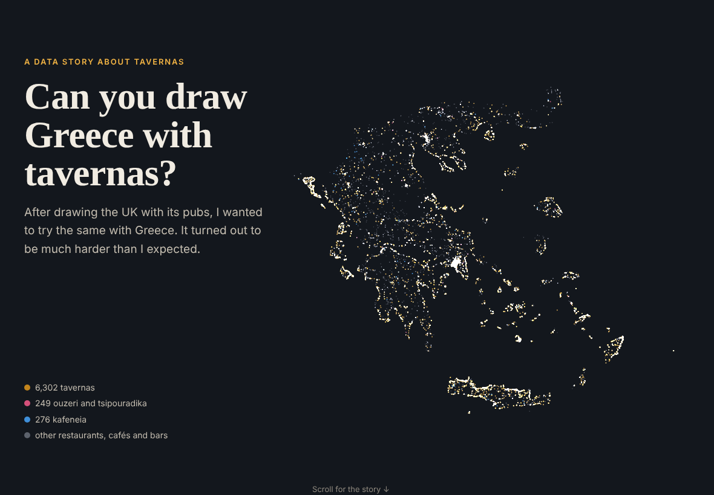
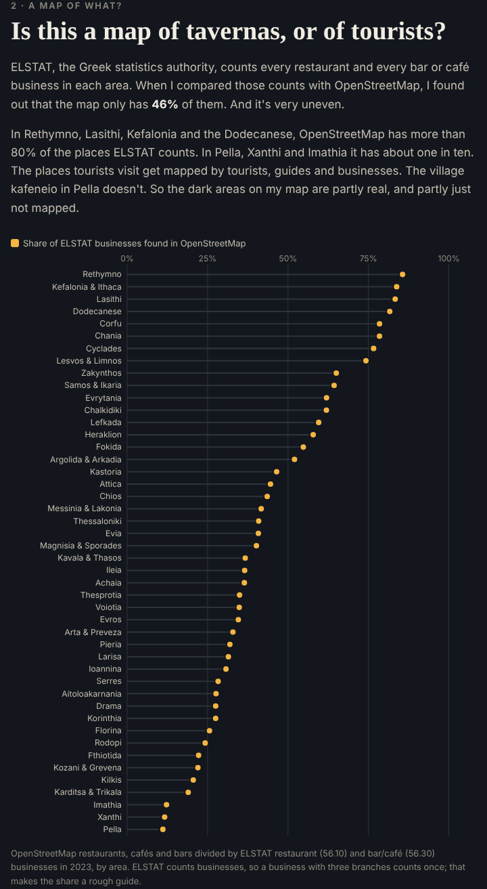

Can you draw Greece with tavernas?
After drawing the UK with its pubs, I wanted to try the same with Greece. The closest thing to a pub is probably the kafeneio, but for a map I thought tavernas, kafeneia and ouzeri together would work best.
It turned out to be much harder than I expected.
Finding the data
For the UK I downloaded one register from one website, and every pub had a name, an address and coordinates. Greece doesn’t have anything like it. The food authority and the health ministry only publish summary tables of their inspections. On data.gov.gr I found only a handful of municipalities, out of 332, that publish their list of licensed shops, and some of those are PDFs or stop in 2018.
So I used OpenStreetMap. Even that wasn’t easy: the servers refused my downloads, so I had to download it by hand in the browser, and it crashed my computer. In the end I had 33,951 restaurants, cafés and bars, and I sorted them into tavernas, kafeneia and ouzeri using their names and tags.

A map of tavernas, or of tourists?
The islands and the coast light up, and much of the north is dark. Then I compared the map with ELSTAT’s official counts of restaurants, bars and cafés, and found out that OpenStreetMap has only 46% of them. On Crete and the islands it has more than 80%, but in Pella, Xanthi and Imathia only about one in ten. So the map shows where tourists go as much as where the tavernas are.

The crisis and the names
ELSTAT’s numbers show about 15% fewer bars, cafés and restaurants since 2011, but twice as many people working in bars and cafés. It’s the same as the UK pubs: fewer places, but bigger ones. Attica gained bars and cafés from 2016 to 2023, while the north lost about a quarter.
The fun part was the names again. Greece doesn’t have a Red Lion. The most common name is Panorama, with only 38, followed by Akrogiali (the seashore), Nikos and, of course, Zorbas.
Try it
- The story and map: etymo.co.uk/greek-tavernas
- Code: github.com/eritrouib/greek-tavernas
I made it with OpenStreetMap and ELSTAT data, Python and Leaflet, coding with Claude.
Data: © OpenStreetMap contributors (ODbL); ELSTAT Statistical Business Register and population estimates.